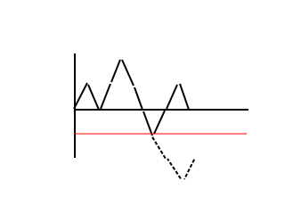

现在有2n个元素：n个+1,n个-1，将他们进行排列，问前缀和始终不小于0的方案有多少种。
答案就是卡特兰数。
现在考虑如何求这个序列的方案。
把前缀和列出来，形成一条折线(然而这里是一种不合法的方案)：

按照途中的红线（y=-1)，把作出使方案不合法的第一步之后的操作翻转。
这时候会发现-1操作比+1操作多了两个，也就是说不合法的方案在经过这种翻转后会走到-2这个位置。
还会发现每一种到-2位置的方案在第一次走到-1后翻转会得到一种走到0的不合法方案。
这样就把不合法方案与到-2的方案建立了映射关系。
所以：
对于有上下界的，也是一样排除，现在排除第一次向上不合法的，然后容斥掉先向下不合法的，然后在容斥回上下上……一直容斥到做不到这种情况为止。
一些思想运用
从原点出发沿网格行走，不允许高于直线，问到的方案数？
其实只要方向的操作次数始终大于等于方向就是不允许跨过直线的意思了。
把某一方向看成+1，某一方向看成-1，那就是卡特兰数了……
现在有一种树，所有非叶子结点的度都是2，问当有n+1个叶节点时树有多少种不同的形态。
考虑递推，设为答案,枚举左右子树情况。
有
其实这就是卡特兰数的递推式……
当然可以换种方式理解。
这种树有很多特殊的性质。
他有n条向左和n条向右的边，而且不同形态的先序遍历都不一样。
把这种树的先序遍历列出来：
左左右左右右……
这种树由于必定有左儿子，所以在先序遍历的任意前缀中，向左儿子走的步数一定大于等于向右儿子走的步数。
把向左看成1，向右看成-1，问任意前缀>=0的排列数。
卡特兰数。
对一个凸边形求三角剖分个数。
还是考虑递推，对于一条边，枚举他的顶点在哪，将多边形拆成两个。
卡特兰递推式又出现了：